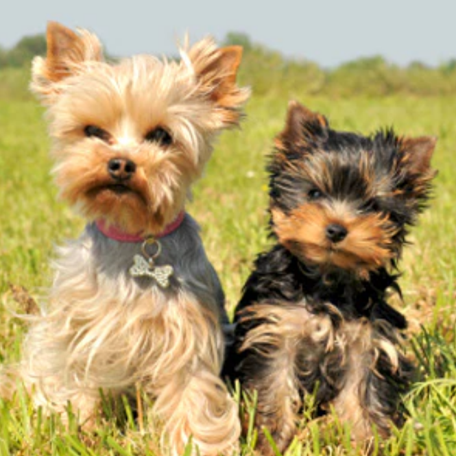
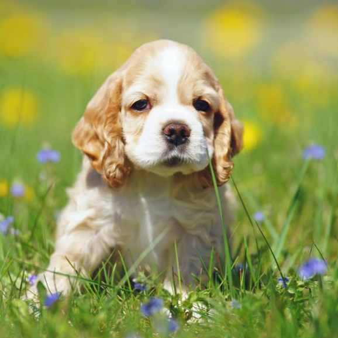
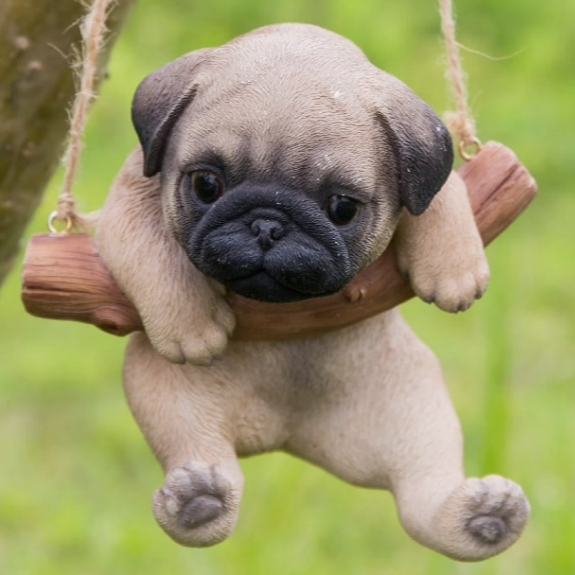
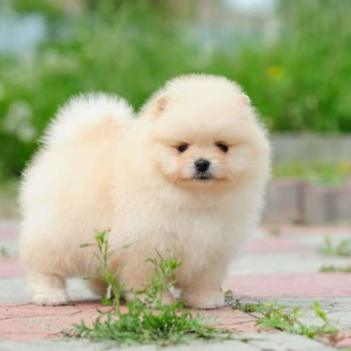
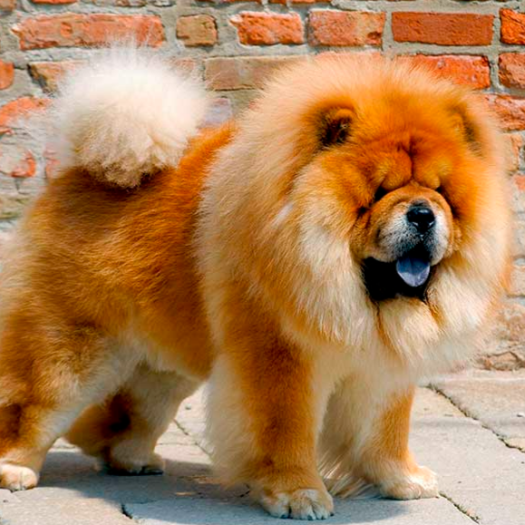
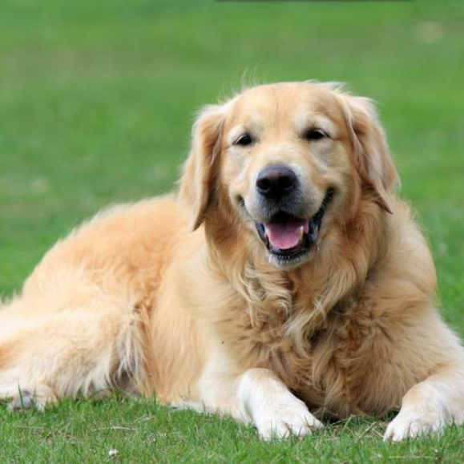
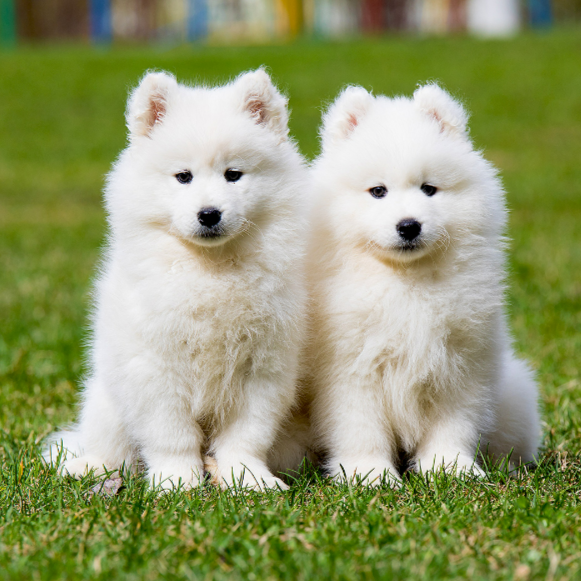
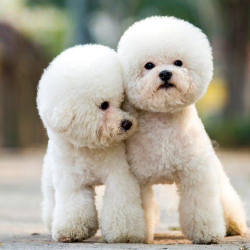
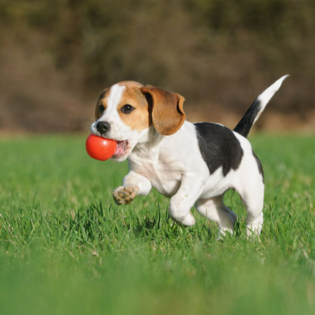
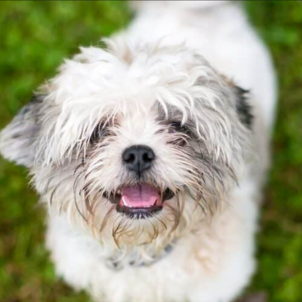

|
Images |
Breeds |
Details |
|  |
Yorkshire Terrier |
A small yet fun friend to be with. They grow their hair to a very long length at some time. They may be small in size although they are very high in maintenance.
|
|  |
Cocker Spaniel |
Gentle type of dogs. They were used for hunting before. They also love cuddling their owners to show as appreciation. |
|  |
Pug |
They have a lazy-like appearance but they are also fun to be with.They are great companions although they are sensitive as well. |
|  |
Pomeranian |
They are one of the most energetic types of dog. They have an adorable appearance because of their hair, although this can irritate sensitive skin. |
|  |
Chow Chow |
The breed of Chow Chow originated from China. They are a big yet soft dog. Most owners say that they have a similar attitude of a cat. |
|  |
Golden Retriever |
One of the most known Scottish breeds. They are big dogs who enjoy the fields. |
|  |
Samoyed |
They have an ice white color. They may look tired as always but they are also very fun and playful. |
|  |
Poodle |
They have a curly fluffy hair. Poodles are actually smart and playful. |
|  |
Beagle |
They are good with other companions. They are also attached to nature. |
|  |
Shih Tzu |
They are one of the most appreciated type of dogs. Most god lovers like Shih Tzu for their cute visuals. |